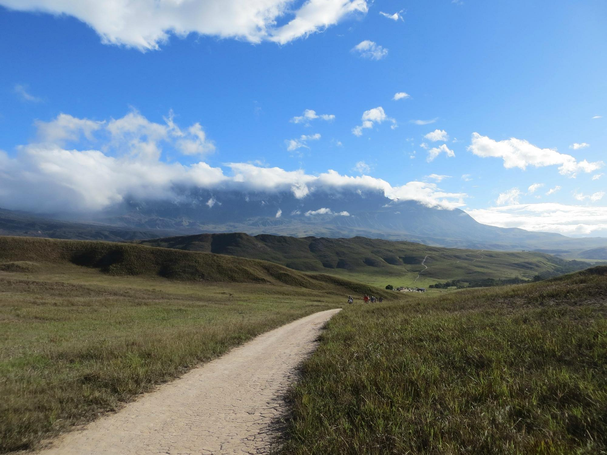
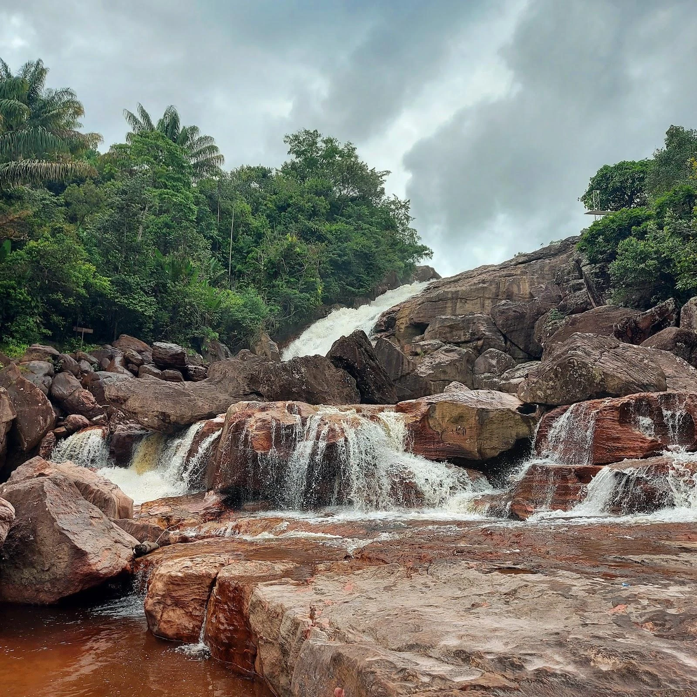
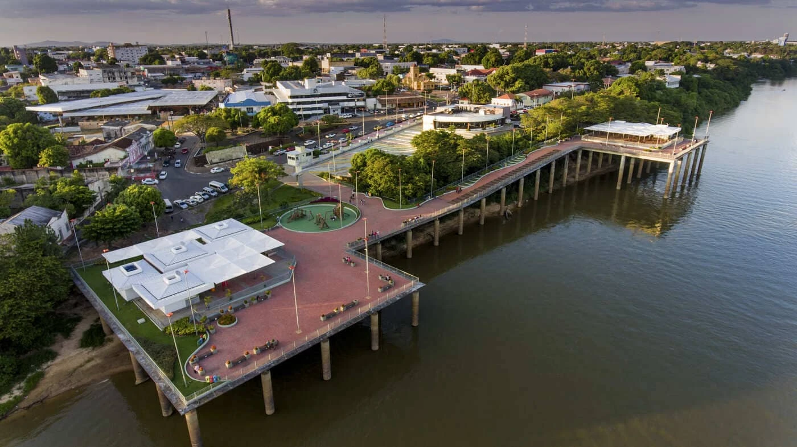
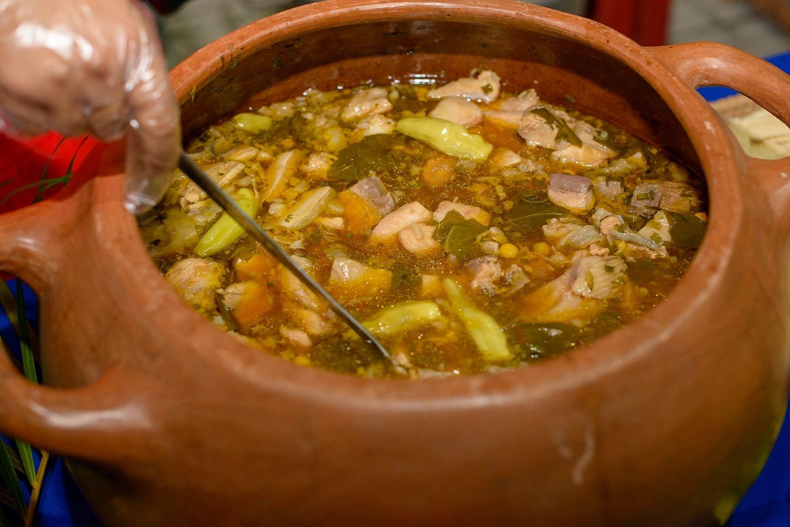
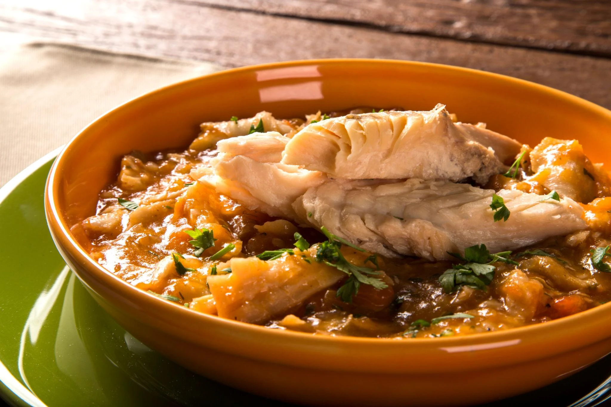
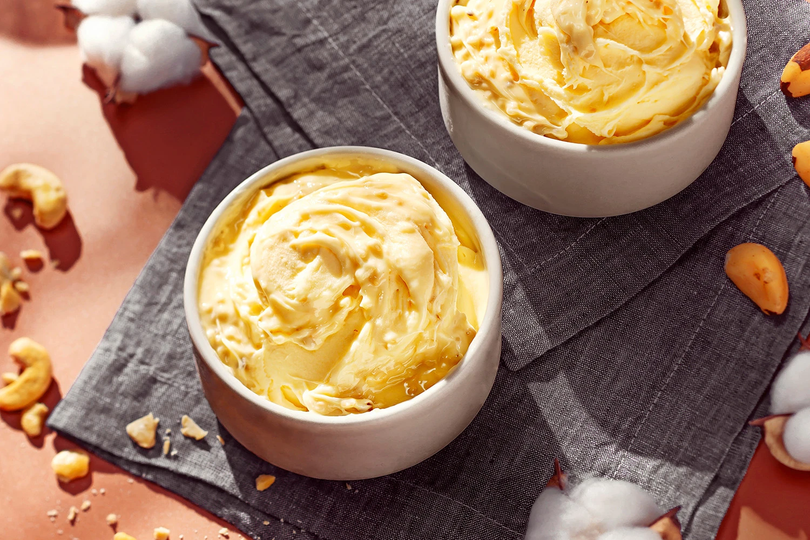

Capital
Boa Vista
Conheça destinos, culturas, sabores e paisagens de todas as regiões
brasileiras.
Destinos, culturas e paisagens
incríveis te esperam.
Roraima é o estado mais ao norte do Brasil, localizado na Região Norte. Conhecido por suas paisagens naturais preservadas, abriga montanhas, savanas, florestas amazônicas e uma rica diversidade cultural marcada pela presença de povos indígenas. É o estado menos populoso do país e oferece experiências únicas de ecoturismo e aventura.

Boa Vista
Aproximadamente 223.505,058 km²
Cerca de 738.772 habitantes
Norte

Uma das formações geológicas mais antigas do planeta, localizada na tríplice fronteira entre Brasil, Venezuela e Guiana. É um dos destinos mais procurados para trilhas e turismo de aventura.

Região famosa por cachoeiras, trilhas e belas paisagens naturais. É um dos principais destinos de ecoturismo do estado.

Localizada às margens do Rio Branco, é um dos cartões-postais da capital, ideal para passeios, lazer e contemplação do pôr do sol.

Prato típico de origem indígena, preparado com peixe, pimentas regionais e ervas. É uma das receitas mais tradicionais e representativas da culinária de Roraima.

Ensopado preparado com tucunaré, peixe muito encontrado nos rios da região amazônica, acompanhado de legumes e temperos locais.

Sobremesa feita com a polpa do cupuaçu, fruta típica da Amazônia, conhecida pelo sabor agridoce e refrescante.
Predominantemente tropical úmido e equatorial. Temperaturas médias entre 24°C e 35°C. A época mais indicada para turismo de aventura é durante o período menos chuvoso, entre dezembro e março.
Predominantemente tropical úmido e equatorial. Temperaturas médias entre 24°C e 35°C. A época mais indicada para turismo de aventura é durante o período menos chuvoso, entre dezembro e março.
Para aventura: Monte Roraima. Para cachoeiras e natureza: Serra do Tepequém. Para conhecer a cultura local: Boa Vista e arredores. Para ecoturismo: áreas de savana (lavrado) e reservas naturais.
Para aventura: Monte Roraima. Para cachoeiras e natureza: Serra do Tepequém. Para conhecer a cultura local: Boa Vista e arredores. Para ecoturismo: áreas de savana (lavrado) e reservas naturais.
Experimente pratos à base de peixes amazônicos, especialmente tucunaré e tambaqui.
Experimente pratos à base de peixes amazônicos, especialmente tucunaré e tambaqui.